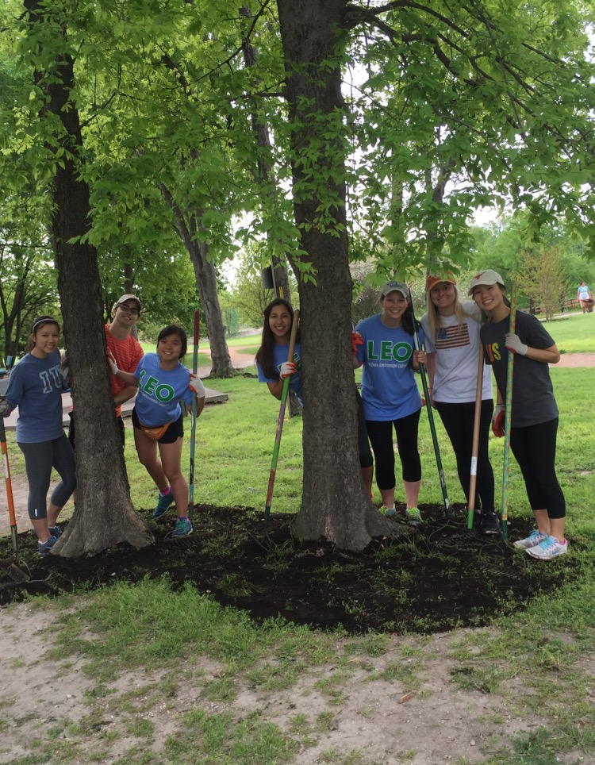

Hey there! Thank you for visiting my website. I hope it gives you a better understanding of who I am. Here's a little background on me.
I'm originally from Guayaquil, Ecuador. After living there until the age of four, I moved to Texas. I've spent the vast majority of my life in McAllen, Texas,
a small town on the southern tip of the state. I'm currently a junior at The University of Texas at Austin. My goal for summer 2017 is
to intern with a tech company in a sales or product management capacity.
University of Texas at Austin
Expected Graduation May 2018
Majoring in MIS, Business Honors, and Urban Studies
Pursuing Elements of Computing Certificate
Work Experience
Ernst & Young
Sophomore summer rotational internship program to get exposure to their three service lines: assurance, tax, and advisory. Click here to learn more!
Texas Union
Part-time job during sophomore year as a receptionist in the Executive Director's Office of the Texas Union building. Click here to learn more!
Insight Financial Health
Freshman summer marketing internship with a financial advisor focused on improving online social media presence and assisting with rebranding process. Click here to learn more!
Extra-Curriculars
McCombs Diversity Council
Organization dedicated to professional and social development by connecting members to companies that value diversity. Click here to learn more!
Longhorn Environmental Outreach
Environmental service organization focused on promoting sustainability and stewardship in the Austin community. Click here to learn more!
Capital Community
Student-run nonprofit that educates Austin city youth and adults about important topics in financial literacy. Click here to learn more!
Code Orange
Members teach programming to Austin city youth at a local after-school recreation center. Click here to learn more!
Global Business Brigades
Nine day brigade in Pueblo Nuevo, Panama to teach a rural community about financial literacy and sustainable business development. Click here to learn more!
Ernst & Young
Overview
The Launch Internship is an eight-week rotational program designed to give students exposure to EY's three major service lines: assurance, tax, and advisory. During each rotation, students have the opportunity to work with different clients and teams.
Experience
The Launch internship was a unique opportunity in that the internship was very much open ended. Outside of the scheduled rotations, I was given the liberty and flexibility to create opportunities for myself in different service lines and sub-service groups. I chose the San Francisco office primarily for the tech clients, as EY has a strong presence among the major tech players in the bay area. I found the flexibility of the program appealing, as it allowed me to explore my varied interests. I enjoyed my accounting classes and was also considering consulting/advisory as a potential career option, so it was the perfect opportunity. The internship allowed me to work with teams at companies like Oracle, Box, and PayPal.
My work varied just as much as my experiences. I saw the project management aspect of EY when I allocated bill and cost rates to the Box audit team according to budgeted work hours. Additionally, I shadowed the advisory team at PayPal working in PayPal's Project Management Office, allowing me to experience what traditional project management work is like. At Oracle I evaluated whether control owners met competence and authority requirements, as well as label necessary documentation for their public filing. I also worked on two major Core Business Service group projects. One consisted of compiling companies headquartered in New York that could potentially be invited to a roundtable dinner for client sourcing purposes. Another project was to create an onboarding document for the McKesson team. By the end of the internship, I felt that I had a holistic understanding of EY's operations ranging from revenue generation through diverse client services to client sourcing through research and outreach.
Ultimately, the launch internship was instrumental in allowing me to refine my career, role, and industry interests. Seeing the diligence with which walkthroughs are conducted and company controls are created gave me a profound respect for the work EY does.
Texas Union
Overview
The Texas Union Executive Director's Office handles all activities, events, and business operations of the Texas Union building. The Union's operations are surprisingly complex as it houses a variety of study rooms, venue spaces, restaurants, and an internal catering company.
Experience
As the receptionist of the office, my duties consisted of assisting all office staff, maintaining supplies inventory, and attending office visitors. On special occasions, I also ran errands on university vehicles. I worked part-time throughout all of the 2015-2016 academic school years. The job was very laid back and I enjoyed the office environment. It was interesting to see some of the internal functions of the university. Considering all that my parents have sacrificed for me, I'm happy to work a few hours a week to at least cover my basic living expenses.
Insight Financial Health
Overview
Insight Financial Health is a wealth management firm part of the Commonwealth Partners network. It's a small family-owned operation located in McAllen, Texas. The founder of the organization had sourced a lot of older clients over time. As his sons were getting increasingly involved with the business, they wanted to rebrand the company to appeal to younger clients. Insight Financial Health rebranded from Collaborative Insights, so they needed a marketing intern to help with the transition.
Experience
I arrived at Insight Financial Health in the midst of the rebranding process. I had a variety of responsibilities during the course of the summer. My main tasks consisted of developing a video series about financial topics and researching how financial advisors can leverage social media to source clients. The video series, Insight Minutes, is a series of videos about financial topics explained in layman’s terms to make financial planning seem less daunting. This was part of our strategy to grow the company's social media presence. I created outlines for the videos, as well as record and edit the videos. Considering my limited video shooting and editing experience, I had to do research about lighting, recording, and Adobe Premiere to create videos that met my supervisor's expectations. In addition to the video series, I did extensive research about how different financial advisors have used Facebook, LinkedIn, and Twitter to build relationships with clients and potential clients alike. I condensed all of my findings into a PowerPoint and gave a presentation detailing how to best use each site. The rebranding also involved a redesign of their website, so I was able to create some nice graphics and move content around using Photoshop to create a more dynamic user appearance.
McCombs Diversity Council
Overview
McCombs Diversity Council is a professional and social organization that seeks to promote the importance of diversity in the modern workplace. Students develop as leaders and learn about the impact of diversity by hosting speakers and events with companies that value diversity. Aside from interactions with corporate sponsors, MDC provides an environment for like-minded students to opnely discuss diversity with the goal of improving inclusivity in the business school.
Experience
When I first arrived on campus, I wanted to join a tight-knit organization that would provide a support network. A friend recommended that I check out MDC, so I gave it a shot. I thoroughly enjoyed my first meeting. The organization was the perfect size - it had enough resources to provide for meaningful experiences, while still being small enough for everyone to know each other. When it comes to organizations, I never join simply to be a member and put it on my resume. I saw incredible value and potential in MDC, so I knew I had to get more involved to continue growing MDC's presence within McCombs.
As a sophomore, I was able to take on the Corporate Relations Vice President (2015-2016) position. In this role, I was primarily responsible for planning and executing MDC's Fall and Spring Diversity Dinner alongside our career services sponsor. Through social media and mass emailing campaigns, I led the registration of 266 students and 250 students for the fall and spring dinner, respectively. Both dinners featured 25 sponsor companies with close to 75 employers present to network with attendees. Considering the scale of the event, I also managed a committee of ten volunteers to appropriately handle day-of event logistics from setup to cleanup. Aside from the dinners, I also handled all communications with companies attending MDC general meetings.
As a junior, I am serving as the Executive Vice President (2016-2017). I will be in charge of planning a local company field trip in Austin for fall semester, as well as a national company field trip for spring semester. These field trips are designed to provide students with a first-hand experience of a company's work environment and culture.
Longhorn Environmental Outreach
Overview
Longhorn Environmental Outreach (LEO) is an environmental service organization that works with local philanthropic organizations like Austin Parks Foundation and Keep Austin Beautiful to promote stewardship at UT and in the community. By coordinating event registration and logistics, LEO makes volunteering a breeze.
Experience
LEO is an organization I co-founded with two friends. After I realized that an organization dedicated to environmental, outdoor service didn't exist, I decided to go ahead and start my own. We participate in different service projects around the city hosted by like-minded organizations. We make volunteering effortless by handling all of the logistics for members (registration, transportation, etc.). We also host speakers at meetings to discuss pertinent environmental news so that members are informed. Aside from service events, we host social outdoor events to cultivate friendships within the organization. Socials have ranged from swimming at Barton Springs to hiking Mount Bonnell. After all, community service shouldn't feel like an obligation - it should be fun!
As the President (2015-2016) of the organization, my priority was to recruit passionate students and source exciting events that were both fun and impactful. Our first semester consisted of extensive tabling, marketing, and hosting information sessions around campus to create awareness about the organization. In many ways, starting the organization was akin to running a startup. There were no procedures or standards to use as guidance. I was in charge of defining the organization's culture, purpose, and direction. Despite blunders in execution, by spring semester we had 20 paid members and were offering, on average, three events each month. It has been an incredible journey this far. We elected a completely new executive board from our pool of members to ensure the organization can grow organically - independent of the founders. My goal is for the organization to thrive and persevere past my tenure at UT.

Capital Community
Overview
Capital Community is a student-led non-profit organization that seeks to create a financially literate Austin community by organizing workshops for both students and adults. Austin, in particular, is in dire need of this aid as it was recently named the most economically stratified city with the vast majority of the east side of Austin consisting of low-income households.
Experience
My motivation to join Capital Community stemmed primarily from my experience with Global Business Brigades. People often assume that fundamental financial topics like savings, loans, and interest rates are common sense, but the reality is that many low-income adolescents reach the age of independence with no prior knowledge about these topics. These individuals are then incredibly vulnerable to financial hardships, as they struggle to manage their finances and become targets for predatory lending. This knowledge gap perpetrates the viscous cycle of economic inequity and poverty.
I have volunteered primarily with children roughly between 6 and 12 years old at a local YMCA facility. As volunteer leader (Fall 2015-Spring 2016), I managed a group of eight volunteers, ensured the group understood the lesson plan, and coordinated volunteering logistics. Working with children requires constant improvisation to keep them engaged. Despite frustrations, it's incredibly rewarding to see the kids really internalize the material. While many of the kids are too young to understand the importance of the material, the goal is for the kids to subconsciously make better decisions with their money. The earlier kids begin to implement principles of smart money management, the better off the will be in the long-run. It's exciting to be part of a non-profit that teaches crucial life skills that are entirely neglected by most school systems.
Code Orange
Overview
Code Orange is a student-led non-profit focused on teaching students programming. With the growing importance of technical skills and STEM careers, it's crucial to give students an exposure to programming at an early age. Code Orange currently volunteers at a local after-school recreation center in the east side of Austin. Code Orange pairs every volunteer with a mentee to provide for a very personalized educational experience. Depending on aptitude, kids are working on projects ranging from Code.org to personal websites.
Experience
Both Capital Community and Code Orange reflect my wholehearted belief that education is the driving force of equality. What is particularly cool about Code Orange is that we are teaching skills that can actually be developed into an incredibly prosperous career. Furthermore, programming is liberating in that it allows users to create software of limitless value, while requiring very limited resources - essentially just computer access. Also, there are an astounding amount of free online resources to develop programming skills, so the sky is truly the limit for the kids that really enjoy it. I am from McAllen, Texas, an area with one of the highest poverty rates in the US. I, much like many students growing up in low-income areas, never had the opportunity to take any programming classes throughout my public high school career. Considering the growing importance of a technical education, I am proud to be part of an effort to give students an early exposure to programming that might never have had exposure otherwise.
In the spring 2016 semester, I had the pleasure of working with seven year old Lorenzo, an enthusiastic and goofy student from Zavala Elementary School. Working with exclusively one mentee was awesome, as it allowed me to dedicate my undivided attention to maximize the impact on one student. Since he didn't have any previous exposure to programming, we started out primarily on Code.org and then worked our way up to Scratch.org, a block-based programming platform. Our major project for the semester was an interactive game where a mouse-controlled Yoshi (from Mario) became larger as it ate randomly spawning burgers and became smaller as it ate randomly spawning apples. One of the greatest challenges I faced was breaking the association that kids have developed between games and computers. It was a ton of fun to work with Lorenzo and I am excited to see all that we can accomplish in the coming years.
Global Business Brigades
Overview
Global Brigades is an international non-profit that adopts rural communities in Nicaragua, Honduras, Panama or Ghana and sends a variety of brigades to meet their developmental goals of the community. There are nine different brigade programs ranging from business to engineering to medical. The brigades establish the necessary infrastructure for a healthy, sustainable economy and society to develop. The brigades range from a week to two weeks in length. Global Brigades staffs full-time employees that continue to work with the communities throughout the year. The Global Business Brigades (GBB) program specifically focuses on teaching financial literacy to break the cycle of perpetual poverty caused by financial mismanagement.
Experience
GBB has without a doubt been one of my most meaningful experiences in college. I had the unique privilege of working with the wonderful Wounaan community in Pueblo Nuevo, Panama at the end of May 2015. I taught financial literacy workshops, as well as consult a small artisan handcraft business on how to develop a more sustainable business model. The workshops were attended mainly by women, as the men would be working during the day. It was inspiring to see their eagerness to learn and gratitude for our work. Many of the women admitted that saving was a novel concept to them; previously, they viewed all income as dispensable, making simple chance events like their child or husband getting sick financially devastating. This program made me realize that financial literacy was a crucial and underserved cause, which led to me joining Capital Community after returning to UT.
Aside from my financial literacy work, I also assisted a small artisan handcraft business that made bracelets and other jewelry using a cultural bead called "Shakras." Despite the fact that their crafts were beautiful, there were some significant issues with the business. All of the members of the community would create these beads, so there was already a major oversupply in the community. The business had also grown dependent on brigades to buy the goods they made, which was obviously not a sustainable or scalable model for obvious reasons. Along with my group of three other brigadiers, we suggested two major changes. Since the crafts were a cultural tradition, we couldn't simply tell them to stop making the products. Instead, we suggested that they start selling the products in Panama City at popular tourist destinations. Considering that transportation was an issue, we found that there was a man that took weekly trips to the city to sell crops and suggested that they coordinate rides with him. After extensive discussions with the group, we discovered that everyone in the community purchased the beads from a man in a nearby village. Since the business would have access to Panama City and one of the members knew bead wholesalers in the city, we also recommended that they start buying beads and reselling them in their community. This way, they had all the beads they needed for production as well as a local revenue stream.
It was amazing to have the opportunity to be immersed in a completely new culture. Working with the community was extraordinarily humbling. Despite living well below the poverty line in a severely underdeveloped community, the community members offered us lunch every day that we worked with them as a way to demonstrate their appreciation for our work. As a native Spanish speaker, I had the unique opportunity to communicate freely with the community, allowing me to develop meaningful relationships with the community members. I also assisted the brigade as a translator whenever necessary. I definitely plan on participating in another brigade before graduating!